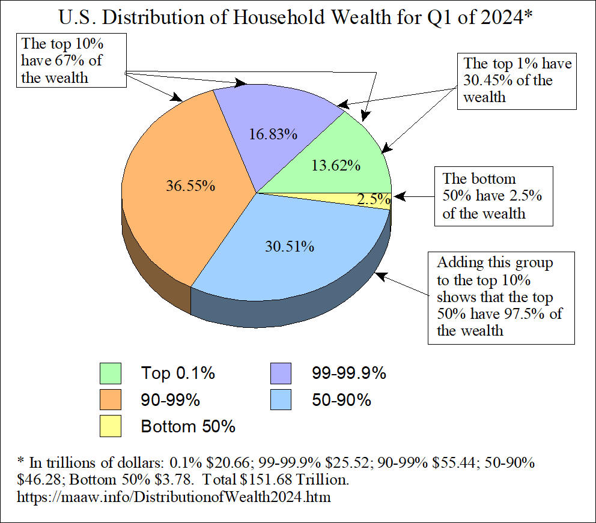

Random stuffs 11th
Xin chào / Hello / Здравствуйте!
This is the eleventh Random stuffs entry of mine which belongs to June 2026. Well, it's interesting that the next month's Random stuffs entry is the 12th one, which is also going to mark the 1-year anniversary of this blog. Wow, time does fly fast, innit?
Well, whether it does or not, let us hop into the first topic. We have undergone many stuff in this month to tell.
The first trillionaire
As a netizen, you must know by now that Elon Musk's wealth has recently reached a trillion dollars, making him the only person on the entire planet to be a trillionaire, in term of US dollars.
So how has he acquired that title? Should you know about the fact that he's now a trillionaire, you will also learn how his wealth has «blown up» like that. That said, I'll still tell you.
«How?»
So apparently, on 12 June, SpaceX's shares started being available for public trading. On the first trading day, the company reached a market capitalisation of about $2.1 trillion, pretty much, innit?
And because Elon already has got lots of shares, so his wealth went up, that's basically the reason. Of course, there are more aspects that have contributed to this, like stocks of other company Elon owns also went up, but SpaceX was the rocket boost for this.
And yeah, that's his wealth, not the money in his bank account, so don't worry since he can't just spend them like you do with your money.
«Does he deserve the wealth?»
This is perhaps a controversial question and the safest answer of mine is «partly». Of course you guys won't like this answer so yeah, allow me to perform a little analysis, opinion and reasoning to this problem.

In one hand, well, Elon Musk deserves his success. His fortune is what he has worked for in decades, he put many efforts into those companies he has (co-)founded, so he deserves whatever that he has now.
On the other hand, it's hard to justify Elon's net worth, especially when many others are still hard working, struggling for a living, and yet this motherfucker right here possesses more than everything a commoner could ever have. Also, I doubt you will find it okay to let a person acquire more wealth than most people have right now. You can see the chart on the right to understand. Even just in the US, the chart still shows how unfairly wealth is distributed.
(Now of course the last reason is essentially the same as the first one, and it should be applied to other individuals with too much wealth, but still)
Well, shall we continue with the next topic?
World Cup (and problems)
Of course, we can't ignore this. The FIFA World Cup is the 23rd and current FIFA World Cup, which began on 11 June, and will conclude on 19 July. As of I'm writing this, Messi is the top scorer with 6 goals.
Now I'm not a football fan unlike most people, so I don't really dig into this topic much, and thus can't really provide you guys much information. But still, I'm still listing things I find interesting around this.
Apparently there are many issues during World Cup, one of which is that citizens of several countries who participate are affected by a travel ban, which includes Haiti, Iran, Ivory Coast, and Senegal. It has prevented many ordinary fans from attending matches.
The most complicated case is Iran. This country's national team has gone through many problems, from their ticket allocation being revoked days before the tournament began, or portions of Iran's coaching and administrative staff being denied visas.
Also, y'know, June in Western countries is «pride month», and a «pride month» must have pride-themed things, right? I don't really know. But anyway, the city of Seattle, US planned a «pride match» (probably a match with pride-themed stuff), which would feature... you guess the countries, Iran and Egypt, two of the countries where LGBT rights are basically non-existent. In fact, you literally can be executed for being gay in Iran. I don't know how the match went but I guess that was not a «Iran's team vs. Egypt's team» but instead «2 teams vs. whole stadium».
There are also more problems, such as stadium access, clashes between fans, etc. but I think this is enough.
Earthquakes in Venezuela
As much as the incident has occurred recently on 24 June, the 2 earthquakes, both of whose epicentres were located in Veroes, Venezuela, have caused considerable and widespread damage and casualties to the northern and central parts of the country, particularly the capital city of Caracas alongside La Guaira.
At 18:04:33, the first earthquake, which was classified as a foreshock, had occurred and measured Mw 7.2 before the Mw 7.5 mainshock occurred 39 seconds later. The maximum intensity of the 2 earthquakes were classified as «Violent» on the Modified Mercalli intensity scale. As of now, over 1700 people were killed, more than 5000 were injured whilst about 50000 are still missing. The United States Geological Survey predicted that the death toll might potentially exceed 100000. Now that was an insane prediction, since if 100000 people had been killed, Venezuela could've lost .3% of its ~30 million people population. It seems pretty low, but .3% of the US population is already more than a million people, so by ratio, it was still bad.
My condolences go to families whose member(s) was killed in the earthquakes, or God forbids, people whose families were killed.
Well, that was sad, so let's continue to something else, which is not as bad but still notable and intense.
The Flamingo Revolution
While the protests, unlike the incident mentioned above, began as early as 23 May 2026 in the Albanian village of Zvërnec, they have later spread to many cities in the country and even nearby ones. The protests, popularly known as the Flamingo Revolution, were triggered by the luxury tourism development project on the Sazan Island within the protected coastal area of Zvërnec (not the same place where protests first started, but still pretty near). The project is backed by Jared Kushner, the son-in-law of Donald Trump. There are also other reasons, such as corruption, political disinformation and democratic backsling, but this is the main one.
Protesters have called for Prime Minister Edi Rama's resignation. Many protesters have also called opposition leader Sali Berisha out, portraying both Rama and Berisha being in the same political establishment. As the protesters are consisted of mainly Gen Z protesters, well, this is another Gen Z protest, or revolution if you call it so, like me. It's been 9 months since I last mentioned about Gen Z protest, innit?
«Why is it the „Flamingo” Revolution?» you may ask. Apparently, the flamingoes are one of the species that inhabits in the Vjosa–Nartë Protected Landscape, which is located near the Sazan Island. Many protesters have used flamingo-related stuff in order to represent both environmental protection and wider civic resistance.
Hmm, looks like the Albanians DO care about environment, so it's still not late for you to do so as well!
Well, I think it's enough for politics today, innit? Oh wait it seems this is the only thing that is directly about politics so far. Still, let's move on to less political and les controversial subjects. Oh wait, this is basically the same as the Venezuelan one-
Europe vs. heatwaves
So, the AC-less Europeans are currently getting struck by severe heatwaves. Temperature has risen in many European countries, especially in Western Europe, such as France, Belgium, Spain, Britain, etc. The official French meteorological administration said 23 June was the country's hottest day since it started measurements, with temperatures reaching 44.3°C in Pissos, 42.1°C in Bordeaux, and 40.9°C in Paris. There are more than 1405 deaths linked to the heatwaves. Like last time, my condolences go to families whose member(s) has died.
You might've thought «Just turn on your air conditioner and don't step outside», but as you may have already known or as the first sentence of the section suggests, they just don't have that in their houses!! «Why?» you may ask. Well, Europeans just don't use air conditioners because it's already cold in Europe normally. That also mean they — from European people to the buildings where they live — have not been built for this. By «the[ir] buildings [...] have not been built for this» I mean there are fewer AC units (which is what I've already said), homes designed to trap heat and not release it, etc.
Heavy topics around here now, just like the atmosphere of Deltarune will be after its Chapter 5.
Deltarune Chapter 5
It is expected that you have completed Deltarune up to Chapter 5, or otherwise know most of its plot before reading this section.
So, Deltarune Chapter 5 has officially released on 24 June, a day after France's hottest day interestingly. It features new characters and places (of course), new game mechanics and several lore drops — not a lot but still.
In this chapter, we finally get to the festival, enter the dark world inside Asgore's shop where his flowers — now become sentient beings, reflecting their respective souls in Undertale — reside. Noelle finally confesses her love, Ralsei expresses his feelings more openly to Kris and everyone else, including starting to tease someone else and actually threatening to kill somebody, which will be relevant any time now.
So, should you have already played it (which is technically required to read this section), you will know about whom the flowers are, what they do, etc. so I'm not beating about the bush now and go directly to what I think about some of them.
Personally, I kinda like Seth, to be honest the only thing I don't like about themis that they admire Berdly. Like, they're an intellectual who actually deploys tactics, creates plans, analyses data and stuff. Also, Seth and Aqua going alongside each other is great, they sure make a good and funny duo!
One that I dislike is Flowery. Now you guys will go insane and do whatever in your power to convince me the opposite (or not, in that case, yeah alright). Now listen, I sure know that he does make soome good points, cares about his friends, etc. but hell nah an enemy of Ralsei is an enemy of mine, even the fluffy boi himself threatens to «burn [him] down in an instant». Sure they have somewhat become less hostile, but his behaviours in most of the game are just unacceptable, such that his redemption isn't that... redemptive for me.
By the way the Petal Feather mode (which you guys call the «Platform(er)» mode, idk I've been living under a rock) is INSANE, bro, as if it weren't Deltarune. Talking about that, it almost feels like Chapter 5 was a Deltarune's fangame more than an actual chapter, not in a bad way though!
I sure have more to tell but nah, let's move to the last subject of the month.
Tuyển sinh
So, should you have read this entry, I'm here to bring good news: I'VE PASSED. I got 7.25/10 on Literature, 7.75/10 on Maths, and a stunning 9.75/10 on English. The total of 24.75 is more than enough for me to enter my DESIRED UPPER SECONDARY SCHOOL, ehehehehehehehehe, I'm not scared, and neither was I before!!
But a friend of mine... did not... did not pass... at least she's still able to get into «Nguyện vọng 2»... She performed really well at school, I mean, our lower secondary school, so why... why did she...
perform that badly?